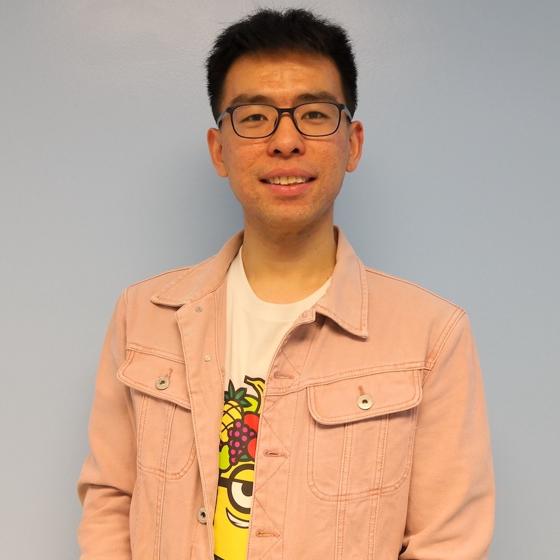

Yangyang Xu's Research GroupCurrent students
Wei Liu (Postdoc, Fall 2022 - ) Email: liuw16@rpi.edu Colin Sutcher-Shepard (PhD, Fall 2017 - ) Email:sutchc@rpi.edu Gabe Mancino-Ball (PhD, Fall 2018 - ) Email: mancig@rpi.edu

Yonggui Yan (PhD, Fall 2018 - ) Email: yany4@rpi.edu Hari Dahal (PhD, Fall 2020 - ) Email: dahalh@rpi.edu Molly Noel (PhD, Fall 2020 - ) Email: noelm@rpi.edu Alumni graduate students and postdoc
Alumni undergraduate students
|